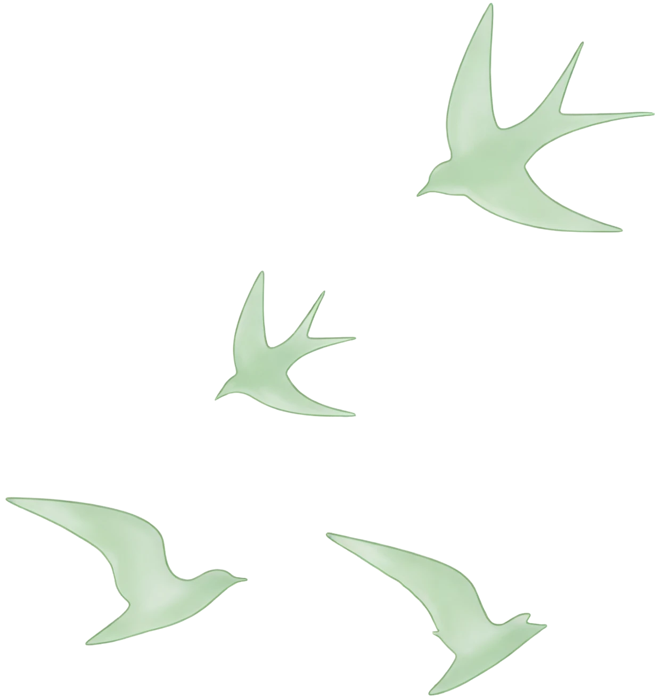
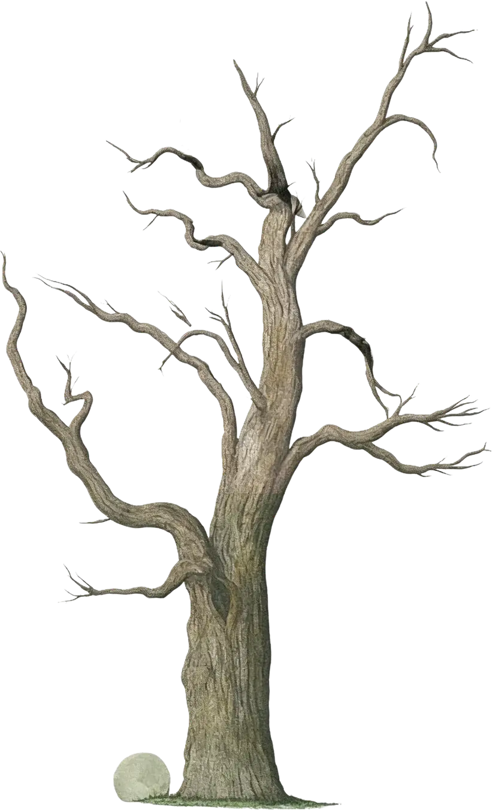

采集真实数据
从网页与平台接口获取数据，处理反爬、缺失和格式问题。
找到变化与原因
用趋势、分类和对比回答业务问题，不停留在图表展示。
把结论讲清楚
将分析结果转成可读的图表、判断依据和下一步建议。


Acquisition
数据爬取
全栈式爬虫方案，深度适配多平台数据接口。运用 Requests、Scrapy、Selenium 实现分布式抓取与反爬策略应对。
PythonScrapySelenium
Core Capabilities
核心技能
精通 Python、Pandas、SQL 的全链路数据清洗；具备完整数据项目 0-1 落地经验；熟练运用 Tableau、ECharts 将数据可视化。
Python爬虫Pandas/SQLTableau/ECharts
Cleaning
清洗存储
精细化清洗方法，解决缺失值、重复项及格式统一问题。结合 MySQL 与 Excel 进行维度聚合与特征工程，保障高质量分析数据。
PandasSQL特征工程
Visualization
可视化展现
成熟运用 Tableau、ECharts 产出高交互商业图表。灵活运用多种图表组合，增强数据的商业质感与直观洞察力。
TableauEChartsMatplotlib
Life is a tree
full of possibilities.
DATA
Data Case Archive02 / Evidence
数据项目不是把图表做出来就结束。我更关心数据从哪里来、是否可信、能说明什么，以及最后能不能支持判断。
从原始数据，
走到可用结论。
01
豆瓣 · 小说全量可视化
Market preference
- Process
- 独立爬取、清洗并构建分析数据集；从评分、年代与词频观察市场偏好。
1w+小说数据
02
微博 · 热搜实时追踪
Trend monitoring
- Process
- 使用 Selenium 搭建自动监测脚本，记录话题热度变化与爆发节点。
Top 20实时追踪
03
京东 · 评论情感分类
User feedback
- Process
- 使用朴素贝叶斯、SVM 进行情感极性分类，定位商品评价中的真实痛点。
86%分类准确率 / 4000+ 评论
01采集 Acquisition
02清洗 Cleaning
03分析 Analysis
04呈现 Visualization